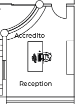

<h2>Image Maps</h2>
<p>Click on the cup of coffee to go to a new page and read more about the topic:</p>



<map name="image_map">
  <area alt="" title="1" href="/Workstation" coords="58,85 87,85 88,108 103,108 103,124 88,123 88,144 58,144 " shape="polygon" (click)="setWorkstationInSession('reception', 1)">>
</map>
